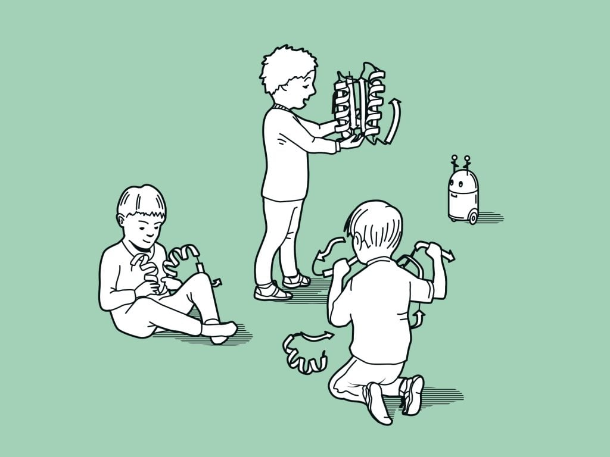
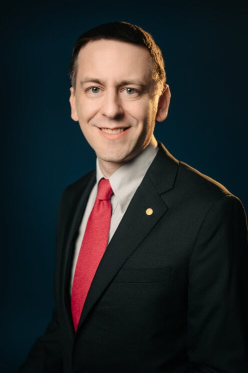

诺贝尔奖得主 John Jumper 离开 Google DeepMind 加入 Anthropic — AI 科学人才战争的新纪元

AlphaFold 通过 AI 模型预测了超过 2 亿种蛋白质结构，将生物学研究效率提升数个数量级 | 图片来源：NobelPrize.org
一、导语
2026年6月19日，Nobel Prize-winning AI researcher John Jumper 在 X 上正式宣布，离开效力近 9 年的 Google DeepMind，加入 AI 初创公司 Anthropic。Jumper 是 AlphaFold 的共同创造者，与 DeepMind CEO Demis Hassabis 共同获得了 2024 年诺贝尔化学奖。他的出走是继 Noam Shazeer（Transformer 共同作者）一周前离开 Google 加入 OpenAI 之后，第二次诺贝尔级人才的跨公司迁徙。这一连串事件表明，AI 行业的人才战争已经进入了一个全新的、前所未有的阶段——科学声誉正在成为与工程能力同等重要的竞争资产。
二、背景分析：从 AlphaFold 到诺贝尔奖
要理解 Jumper 离开的分量，首先要理解 AlphaFold 在科学界的地位。蛋白质折叠问题被称为生物学界的「圣杯」——自 1972 年 Anfinsen 获得诺贝尔奖提出「蛋白质的氨基酸序列决定其三维结构」以来，科学家们花了 50 年试图破解这一难题。传统方法通过 X 射线晶体学或冷冻电镜解析一个蛋白质结构，平均需要 数月到数年，成本高达 数十万美元。
AlphaFold 的出现彻底改变了这一局面。2018 年，AlphaFold 在 CASP13 竞赛中首次亮相即获得第一名。但真正的里程碑是 2020 年的 AlphaFold2——它在 CASP14 上实现了原子级别的预测精度，中位误差小于 1 埃（0.1 纳米），比第二名精确 3 倍以上。《Nature》和《Science》将其评为年度突破，《科学》杂志称之为「解决了五十年的生物学挑战」。
截至 2026 年，AlphaFold 数据库已收录超过 2 亿个蛋白质结构预测，覆盖了几乎所有已知的编目蛋白质。超过 300 万名研究人员在 190 多个国家使用这一资源，相关论文引用超过 40000 次。AlphaFold 对药物研发、疾病研究、酶工程的影响不可估量——在抗生素耐药性、疟疾防治、作物抗逆性等领域都有突破性的应用。
Jumper 本人的经历同样非凡。他拥有物理学博士学位，在完成博士论文后仅 6 个月，Hassabis 就让他领导 AlphaFold 团队。正如 Jumper 在告别声明中所说：
「Demis 在我博士毕业仅六个月后就冒险让我领导 AlphaFold 团队，整个 GDM 团队教会了我如何做伟大的科学。」
—— John Jumper，2026 年 6 月 19 日

John Jumper，AlphaFold 共同创造者、2024 年诺贝尔化学奖得主，即将从 Google DeepMind 转投 Anthropic | 图片来源：NobelPrize.org / Clément Morin
三、核心内容：Jumper 的离开意味着什么？
1. 人才战争的升级
Jumper 的离开并不是孤立事件。就在一周前，Transformer 架构共同作者 Noam Shazeer 宣布离开 Google DeepMind 加入 IPO 在即的 OpenAI。这是一个令人震惊的模式：Google DeepMind 在短短一周内连续失去了两位诺贝尔级（或等价）的研究领袖。Jumper 的离去尤其令人痛心——他不仅是 AlphaFold 的联合创始人，更是 Google DeepMind 自 2014 年被收购以来最耀眼的科学名片。
这反映出 AI 行业一个根本性的转变：人才不再仅仅追随大公司的资源和薪酬。初创公司通过更具吸引力的愿景、更灵活的研究环境、以及潜在的巨大股权回报，正在从传统科技巨头手中抢走最顶尖的科学家。Jumper 加入 Anthropic 的时机尤其耐人寻味——Anthropic 正深陷与 美国政府的监管纠纷，其最强模型 Claude Fable 5 和 Mythos 5 近期因出口管制禁令被迫全球下架。
2. Anthropic 的科学野望
Anthropic 长期以来以「安全 AI」叙事著称，但其研究重心主要集中在语言模型和对齐研究上。Jumper 的加入标志着 Anthropic 正在将触角延伸到科学 AI 领域——这是一个 DeepMind 长期占据绝对领先地位的赛道。Anthropic 正在 6 月 30 日举办一场科学主题活动，Jumper 的到来很可能会成为该活动的核心环节。有分析认为，Anthropic 计划在计算生物学和 AI for Science 领域组建自己的团队，与 DeepMind 在 AlphaFold 之外的 AlphaEvolve、AlphaProteo 等前沿科学 AI 项目直接竞争。
3. Google DeepMind 的连锁反应
连续失去 Shazeer 和 Jumper，Google DeepMind 面临的不只是人才缺口，更是品牌和士气的双重打击。Shazeer 是 Google 耗资 27 亿美元从 Character AI 收购协议中带回的核心人才；Jumper 则是公司科学成就的活招牌。两人一周内相继离开，对现有团队的士气是重大考验。Bloomberg 报道称，Google 在向企业销售 AI 编程工具方面一直「struggled」，这或许是人才流失的更深层原因——当研究人员的创新无法快速转化为商业产品时，离心力就会增加。
四、各方反应
行业层面：Hassabis 本人在 X 上回复 Jumper 的声明：「我们在 AlphaFold 上取得的成就改变了世界，展示了 AI 在科学和医学领域的可能，为 AI 如何造福人类指明了方向。」措辞中既有对成就的自豪，也透露着无奈——毕竟，他失去了自己最得力的研究伙伴之一。
市场反应：Bloomberg 第一时间报道称，Jumper 的离开对 Google 股价影响有限，但分析师指出，人才持续流失可能影响投资者对 DeepMind 长期竞争力的信心。「科学声望正在成为 AI 人才市场上的硬通货，」AI Market Watch 评论道，「Anthropic 通过这笔招揽获得了一瞬间的科学信誉提升，并可能成为计算生物学研究的锚定力量。」
竞争格局：就在 Jumper 离开的同一天，Anthropic 和 DeepMind 的 CEO 联合呼吁 G7 组建 AI 联盟，排除中国参与——这显示出即使在人才争夺上剑拔弩张，面对地缘政治压力时，顶级 AI 实验室仍然存在共同立场。与此同时，OpenAI 同一天泄露的财务文件显示其年营收 130 亿美元但严重亏损——人才竞赛的成本正在成为所有公司的共同压力。

Anthropic 正在从纯粹的语言模型公司向科学 AI 领域拓展，Jumper 的加入将成为这一转型的关键拼图 | 图片来源：Anthropic
五、深度解读
将 Jumper 和 Shazeer 的离开放在一起看，一个清晰的图景浮现出来：AI 行业的人才市场正在经历一次结构性重组。
科学信誉的货币化：过去，AI 公司争夺的是工程人才——那些能训练更大模型、写出更快 CUDA 内核的工程师。2026 年的今天，争夺的焦点转移到了科学人才——那些能定义下一个研究范式的科学家。诺贝尔奖得主、Nature 封面文章作者、CASP 竞赛冠军——这些头衔正在成为公司估值故事中不可或缺的叙事要素。
Google 的双重困境：DeepMind 长期以来享受着「象牙塔」般的研究环境，但这种自由也带来了产品化的迟缓。当 AlphaFold 打开科学的大门时，Google 却未能在药物研发、生物技术等下游市场迅速布局。相比之下，Anthropic 虽然规模更小，但行动更敏捷——从发布 Claude 到推出企业级 MCP 管理，再到如今的科学 AI 布局，Anthropic 在产品化和研究方向上的执行力明显更快。
IPO 叙事的新维度：Jumper 加入 Anthropic 发生在 OpenAI 提交 IPO 申请之后、Anthropic 自身 IPO 传闻不绝于耳的背景下。资本市场正在密切关注这些人才的流向——一个拥有诺贝尔奖得主的 AI 实验室，其估值故事远比一个纯工程驱动的公司更吸引投资者。这或许意味着，科学人才将成为衡量 AI 公司「护城河」的新标准。
对学术界的冲击：Jumper 和 AlphaFold 的成功证明了 AI for Science 的巨大潜力——AlphaFold 数据库的 2 亿个结构预测为全球科学家节省了「数以亿计的研究年」。但他选择离开学术界式的研究环境（DeepMind）加入商业驱动的初创公司（Anthropic），也向年轻科研人员传递了一个信号：伟大的科学发现与商业成功并不矛盾，甚至可能互为助力。
六、总结
John Jumper 加入 Anthropic 不仅是 AI 行业的一次人事变动，更是 AI for Science 时代全面来临的标志性事件。当一个诺贝尔奖得主选择离开老牌学术巨人、加入一家以安全 AI 为使命的初创公司时，世界正见证科学研究范式的根本性转变——科学发现不再仅仅是实验室的产物，而是人才、资本、愿景和执行力共同作用的结果。AlphaFold 的成就已经证明 AI 可以加速科学发现，而 Jumper 的未来将证明：这些加速科学发现的人才，又将如何反过来加速 AI 本身的进化。
原文：U.S. scientist John Jumper to leave Google DeepMind for Anthropic — Reuters · CNBC · Google DeepMind — AlphaFold
看今日完整快报 →